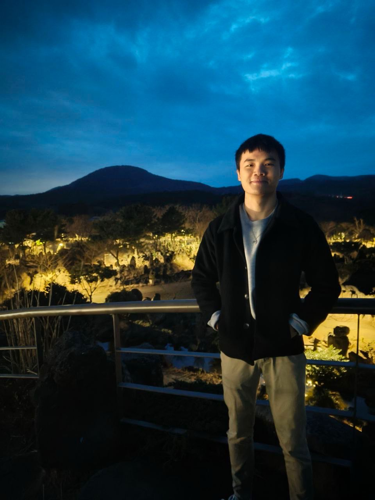

About Me
Who Am I?

Hi! I'm Gabriel Wan, a Year 2 Computer Science student at NUS.
I build things with code — from algorithms to products. Currently studying at NUS, and always looking for the next interesting problem to solve. I pride myself on being resilient, hardworking, and unafraid to tackle tough challenges. Beyond the screen, I'm an avid squash player and a believer in continuous learning.
My Specialty
My Skills
I have built a strong foundation in Computer Science principles through my coursework at NUS and hands-on projects. I am constantly learning new technologies to expand my stack.
Languages
JavaPythonCJavaScript
Backend & Data
Node.jsExpress.jsFastifySQLiteClickHouse
ML & Cloud
TensorFlowPyTorchGoogle Cloud
Platforms & Tools
Git & GitHubDockerJiraMicrosoft Power Platform
Education